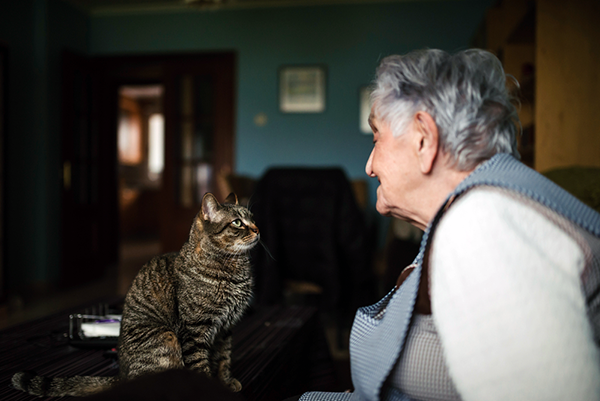
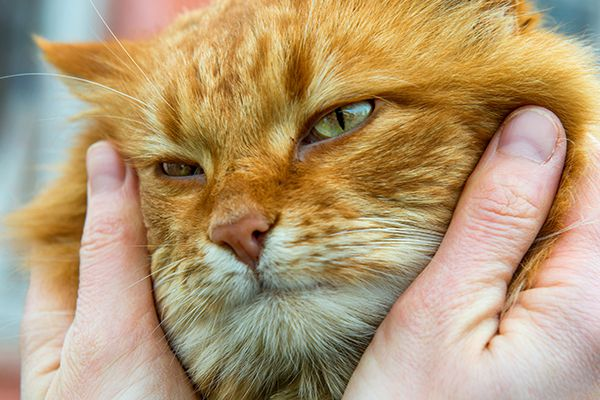

As a cat owner, having cats provide protection on our household on pest like rats, they are very territorial and they don't like outsider. Unlike those cats are not good guards against malicious stranger. Cat's is easy to take care. They require less food and litter less mostly they cover it with dirt.
Cats can sanitize themselves but I still advice to bath them sometimes with warm water. It takes a lot of time for them to get used with water since it makes their fur cold affecting the skin which cause panic to the cats, that is why warm water is advisable. Avoid feeding them dairy foods since cats are naturally lactose intolerant once they reach adult age which means they get sick when drinking milk.
Cats travel around in their territory, Mostly male cats travel around to find mate. Cats is notorious for their reproduction that is why it is advisable to have them spayed if you don't want unnecessary responsibilities of raising another kitten. Have a known vet do the work to provide safety of your pet.
Cat can live 2 to 16 years, it can be longer depending on the genetics and health of your cat. If you have a pet cat, Spend more time with them. They may be gone because of accident and diseases. Pet them as if they are part of your family.